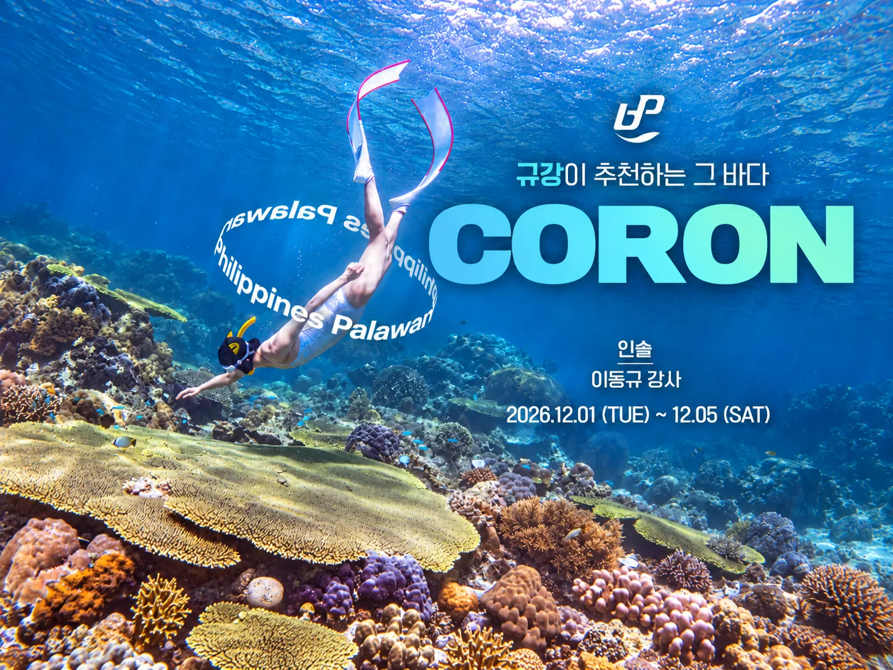

이동규 · 프리다이빙 강사 & AI 크리에이터
Dive deeper.
Create beyond.
바다에서는 더 깊이,
상상 속에서는 더 멀리.
그 사이에서 발견한 것들을 기록합니다.
Story
바다와 창작 사이.

Films
만들고 싶은 이야기
Story.
한 호흡 사이에 떠오른 생각들.
바다와 창작 사이에서 기록합니다.
지금 읽어볼 이야기
현실에서 상상으로 넘어가는 한 장면.
아이디어를 이미지와 영상으로 이어가는 제작 과정을 정리했습니다.
모든 이야기 4
아직 찾는 이야기가 없어요.
다른 검색어나 주제로 찾아보세요.
Contact
다음 탐험은, 함께.
프리다이빙 문의부터 새로운 크리에이티브 협업까지.
당신의 이야기를 들려주세요.